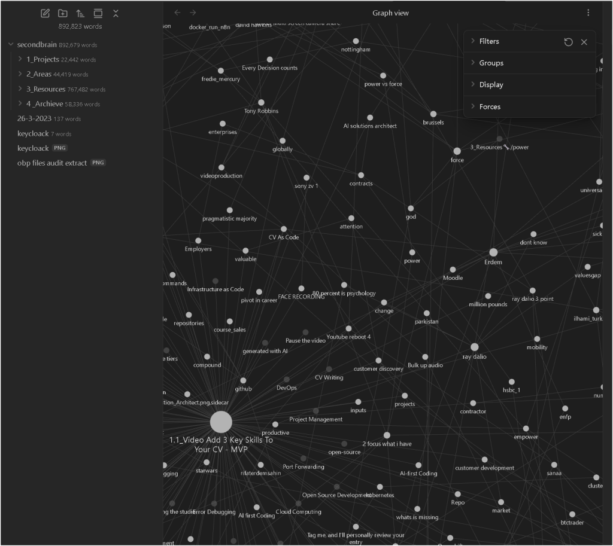
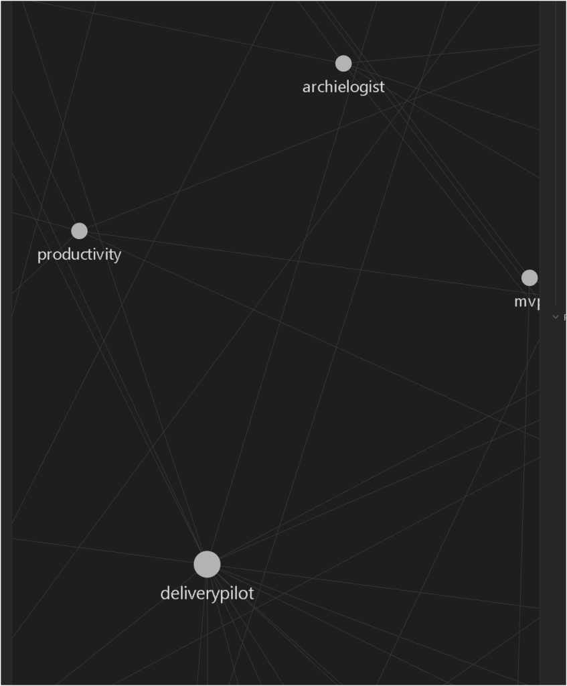

Why I Moved to Obsidian: A Journey to Clarity and Creativity


Reason – Why?
For me, moving to Obsidian wasn’t just about switching tools—it was a spiritual and mechanical awakening. I’d been drowning in a sea of scattered notes, half-baked ideas, and clunky workflows. Tools like Notion or Evernote felt like rigid boxes, suffocating my creativity rather than lifting it. I craved a space that could evolve with me—something fluid, interconnected, and alive. Obsidian became my digital sanctuary, a place where my thoughts could breathe, connect, and grow like a living mind map. Emotionally, it’s been a lifeline to clarity; mechanically, it’s a powerhouse for organizing chaos.

Purpose – How?
Obsidian isn’t just a note-taking app—it’s a philosophy. Here’s my roadmap and tactics for making it work:
-
SELF LIFTER: It’s a mirror for my growth, reflecting my ideas back to me in sharper focus.
-
PRESENT VALUE: I capture fleeting thoughts instantly, preserving their worth.
-
HIGH TOUCH. HIGH TECH: It blends personal expression with cutting-edge tech.
-
LEVERAGE STORY: My notes weave narratives, not just bullet points.
-
TOOLS PROCESSES: Plugins like Dataview and Templater supercharge my workflows.
-
LATEST ENVIRONMENT: Obsidian’s updates keep me riding the tech wave.
-
BUILD STUDIO: It’s my creative lab for writing, coding, and brainstorming.
-
ITERATE ARTICULATE: I refine ideas over time, turning rough drafts into gold.
-
RIDE TECH AI TRENDS: Pairing it with AI tools (like this post!) amplifies my output.
-
CAPTURE RESEARCH OPEN SOURCE: I hoard knowledge from the web and X, linking it all.
-
ORGANIZE DEVELOP > LACAN: Inspired by thinkers like Lacan, I structure complexity.
-
DISTILL VIDEOS: I break down YouTube insights into bite-sized notes.
-
MOVE EVERYWHERE: With mobile sync, my brain travels with me.


Map – What?
Here’s how I made the leap and what keeps me hooked:
-
Installed Obsidian: Downloaded from obsidian.md and set up my vault.
-
Imported Chaos: Moved old notes from Notion, Google Docs, and random text files.
-
Linked Thoughts: Used double brackets to connect ideas organically.
-
Plugged In: Added plugins like Kanban, Calendar, and Obsidian Git for version control.
-
Went Visual: Activated the graph view to see my mind in 3D.
-
Synced Up: Set up sync across devices with Dropbox for seamless access.
-
Iterated Daily: Built a habit of daily notes to track progress and ideas.
The result? A dynamic, ever-growing knowledge base that feels like an extension of me.

Web References
-
Obsidian Official Site – Where it all began.
-
“How Obsidian Changed My Life” – Inspiration from another convert.
-
Obsidian Plugin Community – Tools that turbocharge the experience.

Connect with Me
LinkedIn: https://www.linkedin.com/in/rifaterdemsahin/

Twitter: https://x.com/rifaterdemsahin
YouTube: https://www.youtube.com/@RifatErdemSahin

GitHub: https://github.com/rifaterdemsahin

This document was prepared with the assistance of xAI’s Grok 3 model on March 26, 2025.
Imported from rifaterdemsahin.com · 2025